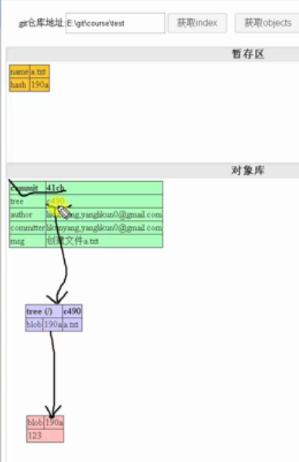

Git笔记（二）
第八课.git如何存储数据
执行下面的命令：
生成一个.git文件夹，里面一个index文件就是暂存区.git/objects文件夹就是git的对象区。
执行命令：$ git ls-files -s
就可以得到暂存区内容：100644 190a18037c64c43e6b11489df4bf0b9eb6d2c9bf 0 a.txt
查看哈希值对应的内容：git cat-file -p 190a
就可以得到内容：
123
进行提交git commit -m ‘创建文件a.txt’
生成新的对象：
生成commit和tree对象

之后再创建新的文件b.txt，再添加并提交，就可以得到新的对象：
总结：
每一个提交的索引：
一个提交的索引：
分支：跟踪文件版本
第九课. 深入Git存储之文件格式
第十课.git分支
查看历史提交记录：git log
查看提交的哈希值：git log –oneline
查看分支，当前只有一个分支：
查看分支中的内容：
由分支可以知道，内容哈希与第二次提交的哈希相同。
新建开发分支：git branch dev
查看当前分支：git branch
切换到dev分支：git checkout dev
查看一下当前有哪些分支：
查看一下两个分支指向的提交的hash值：
所以两个分支当前都指向相同的提交
自动创建并切换到一个分支bug_11：$ git checkout -b bug_11
HEAD指向当前分支：
查看HEAD指向的分支，可以看到当前是在bug_11分支上。
分支总结：
查看分支的另一个方法：git log --oneline --decorate
基于某一次提交的hash创建分支：git branch dev commithash(分支的hash)
或者git branch dev master
空的提交：git commit --allow-empty -m ‘功能1’
git log --oneline不能看到空的提交，要想看到空的提交，也就是所有提交，得执行：git log --oneline all
顺便查看提交和分支：git log --oneline all –decorate
图形化展示:git log --oneline all –decorate –graph
给上面起别名：git config alias.logg "log --oneline --all --decorate --graph"
利用别名展示：git logg